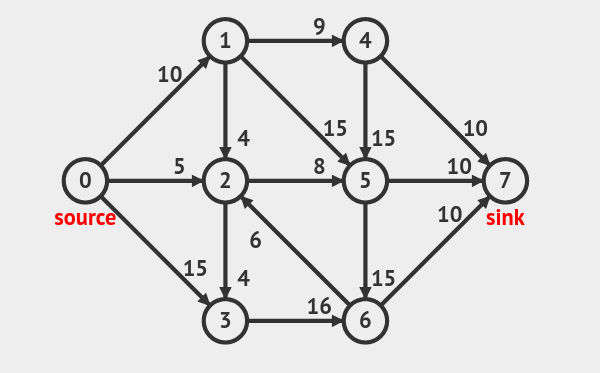
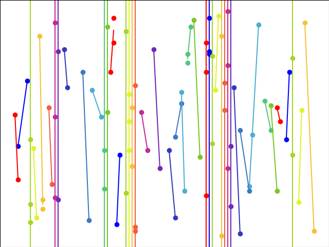

CS F364 Assignment 2
Table of Contents
1. Ford-Fulkerson Algorithm
1.1. Description
1.1.1. Problem statement
- Minimal cut
The problem is to find the maximum flow of a flow network. It can be shown that this is equal to the minimum of the capacities of all possible cut. Therefore we want to find the minimal cut.
- Bipartite matching
A matching in a bipartite graph is a set of the edges chosen in such a way that no two edges share an endpoint. A maximum matching is a matching of maximum size (maximum number of edges). In a maximum matching, if any edge is added to it, it is no longer a matching. There can be more than one maximum matchings for a given bipartite graph. The maximum matching can also be found by converting into the flow problem described above
1.1.2. Algorithm
First, we set the flow of each edge to zero. Then we look for an augmenting path from  to . An augmenting path is a simple path in the residual graph, i.e. along the edges whose residual capacity is positive. If such a path is found, then we can increase the flow along these edges. We keep on searching for augmenting paths and increasing the flow. Once an augmenting path doesn't exist anymore, the flow is maximal.
to . An augmenting path is a simple path in the residual graph, i.e. along the edges whose residual capacity is positive. If such a path is found, then we can increase the flow along these edges. We keep on searching for augmenting paths and increasing the flow. Once an augmenting path doesn't exist anymore, the flow is maximal.
1.2. Results
1.2.1. Minimal cut
- Test case 1
- Test case 2

- Test case 3
1.2.2. Bipartite matching
- Test case 1
- Test case 2
- Test case 3
2. Segmented Least Squares
2.1. Description
2.1.1. Problem statement
Given a set P of n points in the plane, denoted ; and suppose .
Given a line defined by the equation , we say that the error wrt is sum of the its squared distances to the points in
A single line with the best fit for the points can be found using the well-known formula for linear regression. In the real world, a single line may not fit the dataset optimally, it may be a collection of line segments. Of course, if we have points then this collection has zero error. But this will overfit the data. Hence, we want to find a balance between minimizing error and minimizing the number of line segments. Formally, we want to minimize where is a given parameter called the penalty per line.
2.1.2. Algorithm
We used a dynamic programming approach with the following recurrence relation:
where
- is the optimum solution for the first points
- is the starting point of the last line segment
- is the error for the last line segment
- is the error for the first points
2.1.3. Pseudocode
Segmented-Least-Squares(n)
Array M[0..n]
Set M[0] = 0
For all pairs i <= j # O(n^2)
Compute the least squares error for e(i, j) for the segment p_i,...,p_j # O(n)
Endfor
For j = 1, 2, ..., n
Use the recurrence relation to compute M[j] # O(n)
Endfor
Return M[n]
2.2. Issues in coding
The case where slope is infinity had to be handled separately as we were getting NaN/ SIGFPU otherwise.
2.3. Results
Test case 1
Input: 10 points, penalty per line = 3
Output: RSS = 13.6, no. of lines = 4

Test case 2
Input: 11 points, penalty per line = 200
Output: RSS = 402.7, no. of lines = 2

Test case 3
Input: 100 points, penalty per line = 94
Output: RSS = 4307.14, no. of lines = 44
